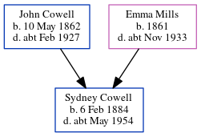

Lillian Eleanor Cowell 1886 - c1969
[ Home ] | [ Calendar ] | [ Surnames Index ] | [ Errors ] | [ Family History ]The 3rd of 4 children of John Cowell (a police constable) and Emma Mills, Lillian Cowell, the third cousin twice-removed on the mother's side of Nigel Horne, was born in Tooting, London, England on 18 Apr 18861,2,3 and baptised in Wandsworth, London, England on 7 Nov 1886.
During her life, she was living at 71 Victoria Road, Willesden, London, England on 5 Apr 18915; at 28 Claremont Road, Kilburn, London on 31 Mar 19016, on 2 Apr 19114 and on 19 Jun 19217 (when she was living with her); and at 106 Granville Road in Willesden in 1929, in 1936 and on 29 Sept 19391.
She died c. Aug 1969 in Hendon, London, England3.
Parents
- John Charles was born on 10 May 1862
- Emma Elizabeth was born in 1861
Citations
- 1939 Register - Findmypast (was recorded at this address)
- England & Wales births 1837-2006 - Findmypast
- England & Wales deaths 1837-2007 - Findmypast
- 1911 Census for England & Wales - Findmypast (was age 24 and the daughter of the head of the household)
- 1891 England, Wales & Scotland Census - Findmypast (was age 4 and the daughter of the head of the household)
- 1901 England, Wales & Scotland Census - Findmypast (was age 14 and the daughter of the head of the household)
- 1921 Census Of England & Wales - Findmypast (was age 35 and the daughter of the head of the household)
Media
1891 England, Wales & Scotland Census - GBC/1891/0007931684
England & Wales births 1837-2006 - BMD/B/1886/2/AZ/000131/366
1939 Register - TNA/R39/0971/0971E/009/11
England & Wales deaths 1837-2007 - BMD/D/1969/3/AZ/000216/112
Family Tree
Map
Generated by ged2site. Last updated on Jul 3, 2024
Known Issues
Residence record for 1929 contains no citation
Residence record for 1936 contains no citation
Removing leading 0 from residence date '02 Apr 1911'